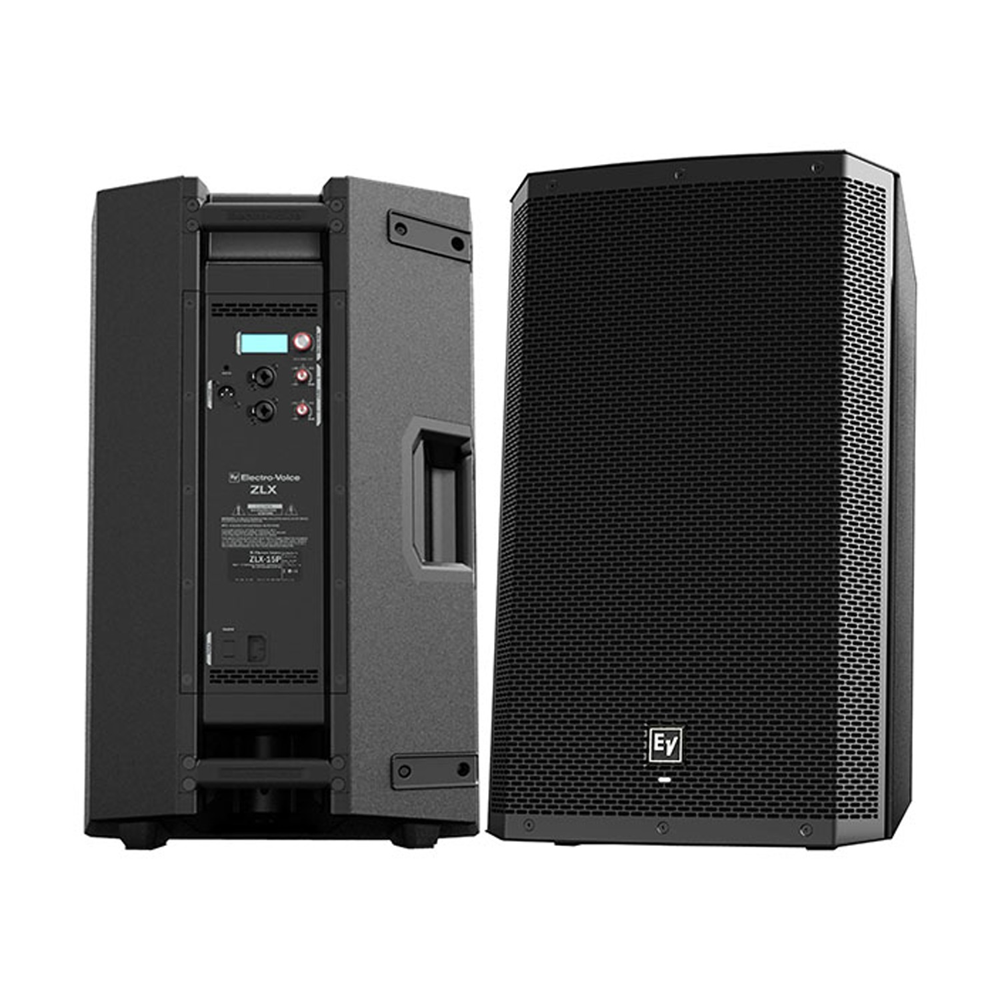

EV ZLX-12P & ZLX-15P Repair Service
Professional Electro-Voice powered speaker repairs at component level
At Britfix Repairs, we provide professional Electro-Voice EV ZLX-12P and EV ZLX-15P repair services for customers throughout the UK.
If your EV powered speaker has no power, no sound, distorted output, intermittent audio or an amplifier fault, we may be able to repair the original electronics without replacing the complete speaker.
Repairs are carried out at component level, including fault-finding and repair of amplifier modules, switch-mode power supplies, output stages and associated electronic circuits.
EV ZLX Models We Repair
- Electro-Voice EV ZLX-12P
- Electro-Voice EV ZLX-15P
- EV ZLX amplifier and power supply modules
- Other Electro-Voice powered speaker models
Common EV ZLX Problems We Repair
- ⛔ Speaker completely dead or not switching on
- 🔇 Power is present but there is no sound
- 🔉 Very low or intermittent audio output
- ⚠️ Distorted, crackling or cutting-out sound
- 🔥 Blown amplifier components or output stage failure
- 🔌 Switch-mode power supply failure
- 🔁 Speaker repeatedly switching on and off
- 🌡️ Speaker shutting down after warming up
- 💡 Display or control panel not operating correctly
- ⚡ Internal short circuit or blown fuse
Component-Level EV Speaker Repair
Many powered speaker faults are caused by failed electronic components inside the amplifier or power supply module. Replacing the complete module can be expensive or may not be possible if the part is unavailable.
We inspect and test the internal circuitry to identify the original fault. Depending on the condition of the unit, repairs may include:
- Power supply diagnosis and repair
- Amplifier output-stage repair
- Replacement of failed semiconductors and damaged components
- Testing for short circuits and protection faults
- Repair of damaged tracks, connectors and solder joints
- Final power and audio testing after repair
UK-Wide Mail-In Repair Service
Customers from across the UK can send their EV ZLX speaker or removable amplifier back panel to us using a tracked courier service.
Before sending your equipment, please contact us with the exact model number and a short description of the fault. Photos or a short video of the problem may also help with the initial assessment.
Why Choose Britfix Repairs?
- Specialist electronic fault-finding
- Component-level repairs where possible
- Experience with powered speakers and professional audio equipment
- UK-wide tracked mail-in service
- Clear communication before additional work is carried out
We also repair other professional audio equipment, including QSC powered speakers, amplifiers, subwoofers, mixers and PA systems. View our audio equipment repair service for more information.